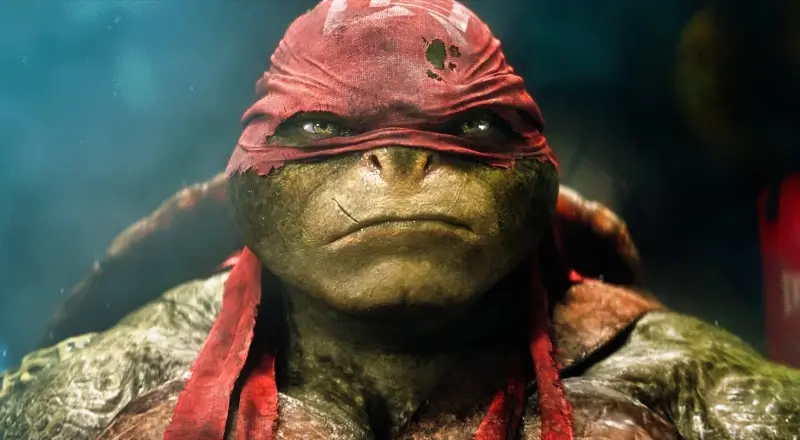

Leonardo
Raphael, nicknamed Raph, is a superhero and one of the four main characters of the Teenage Mutant Ninja Turtles comics and all related media.[1] In most iterations, he is depicted as the most aggressive of the turtle brothers, physically the strongest, and often at odds with his brother, Leonardo.[1] He is usually depicted wearing a red eye mask; in this regard, he is the only turtle to retain this color since the original incarnation of the characters, as the remaining turtles received different colors at a later time. Raphael wields twin sai as his primary weapon. He is commonly portrayed in media as speaking with a Brooklyn accent. Raphael is known for his temperamental and cynical personality, being short-tempered, aggressive, sullen, maddened, sarcastic, and rebellious.[2] The origin of Raphael's anger is not always fully explored, but in some incarnations appears to stem partly from the realization that they are the only creatures of their kind and ultimately alone, while also bothered by the injustice the helpless and innocent suffer. Despite his fiery personality, he has shown a soft side on many occasions, mainly to Michelangelo. Raphael is an opinionated and independent character who chafes under authority. He serves as the team's enforcer. The combination of his personality and role contributes to his rivalry and frequent arguments with his brother and leader, Leonardo. When he feels as though Leonardo's decision is not in the best interest of the family, for whatever reason, he is sure to voice it. However, in the most recent versions of the franchise, Rise of the Teenage Mutant Ninja Turtles, his role as protector takes precedence over his traditional characterization and his dynamics with his brothers. In this series, Raphael is the eldest brother and his dynamic with Leonardo is effectively swapped—with Raphael now admonishing Leonardo for his irresponsible attitude and disregard for his role as leader.
History
In the Image series that treated the first two volumes of the Mirage Comics as canonical, Raphael was blasted in the face and disfigured. After that, he wore one of Casey Jones' hockey masks for much of the time, and eventually just an eye patch. Later, Raphael wore Shredder's armor in an attempt to psychologically dominate a number of the New York Mob, with whom the Foot Clan was engaged in a losing gang war. He donned a slightly variant version of the armor and pretended to be the Shredder to get the advantage on his pursuers. He succeeded in defeating them and was then accepted into, and given control of, the New York faction of the Foot Clan for a brief time. In the independent published series of Image Comics #24, Raphael had an eyepatch and red bandana for the whole issue and was even angrier than ever. He killed Cheng with whom he had been friends in issue #25, and as soon as Pimiko was killed by the gauntlet of Lady Shredder, Raph removed his bandana and eyepatch to reveal his left eye was no longer disfigured but was back to normal. He later said to Leonardo he had a thing for Pimiko, and like Donatello with Baxter's help in ridding him of cyborg parts, Raphael kept his crush on Pimiko a secret.